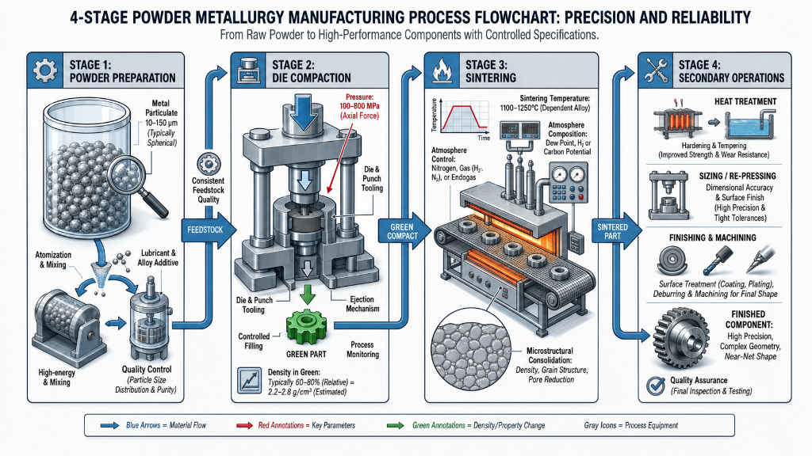
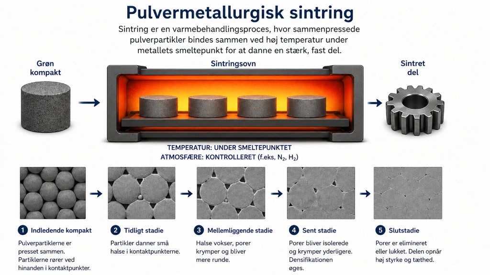
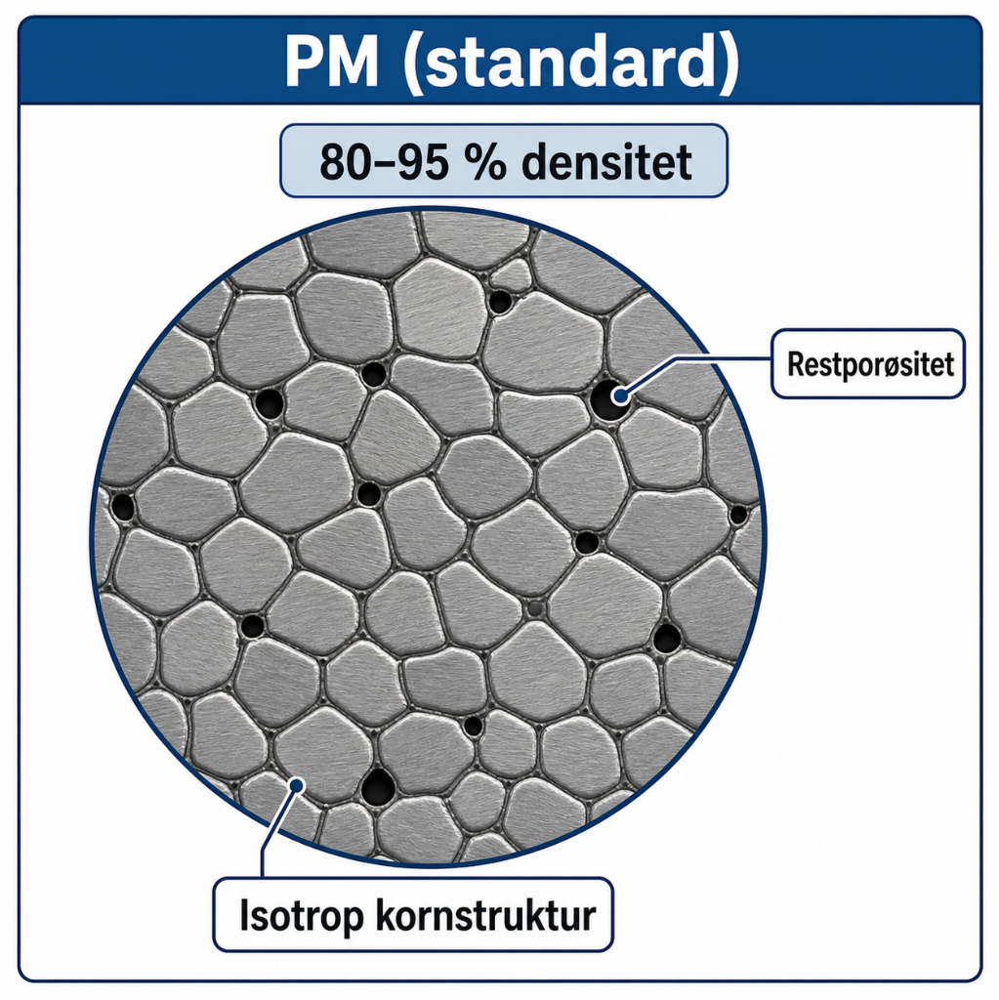
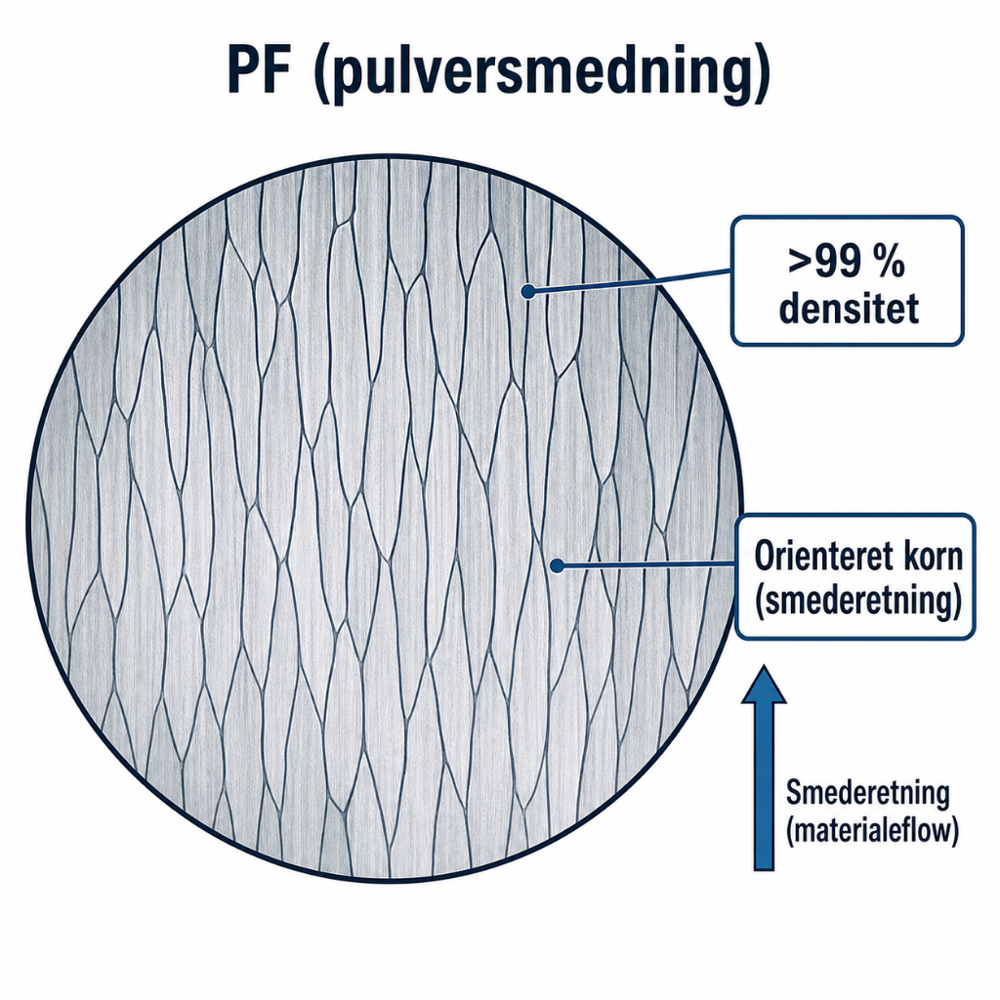
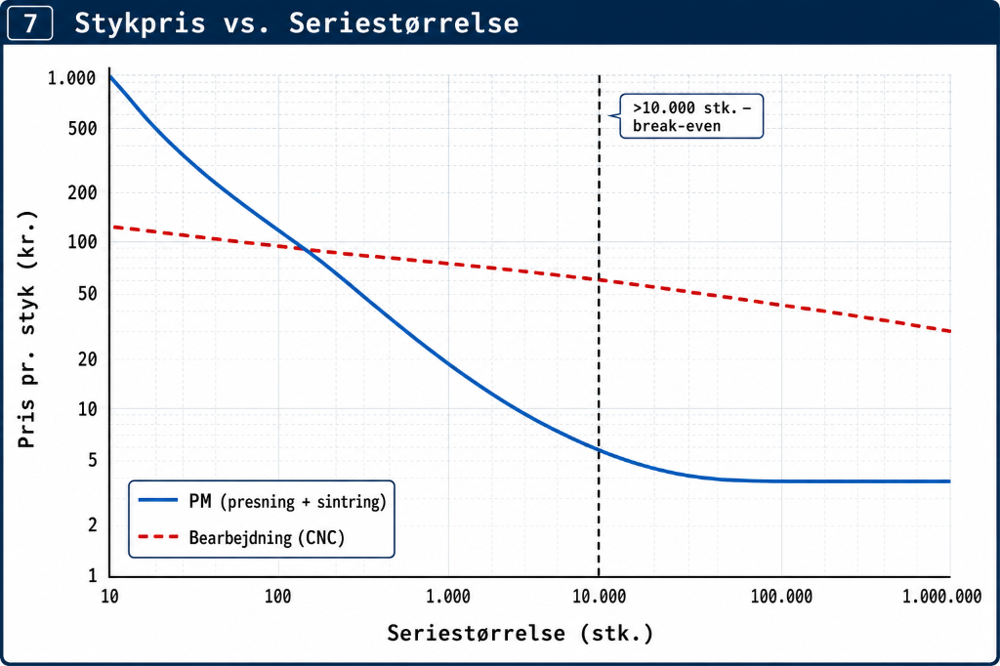

| Begreb | Hvad | Nøgletal |
|---|---|---|
| Grøn kompakt | Presset pulver inden sintring — porøst, svagt | 10–20 % porøsitet |
| Grøn densitet | Tæthed efter presning, før sintring | ≈ 75–85 % af teoritæthed |
| Sintring | Opvarmning under smeltepunkt → diffusion binder partikler | Porøsitet ↓, styrke ↑ |
| Net-shape | Færdigt emne uden efterbearbejdning | ≈ nul materialespild |
images/
Kritisk trin: sintring definerer de mekaniske egenskaber — det er her porøsiteten falder og styrken stiger.



| Egenskab | Lav densitet (høj porøsitet) | Høj densitet (lav porøsitet) |
|---|---|---|
| Trækstyrke | Lav (~200 MPa) | Høj (~700 MPa) |
| Hårdhed | Lav | Høj |
| Udmattelsesliv | Kort (porer = spændingskoncentratorer) | Længere |
| El./termisk ledning | Lav | Nær massivt metal |
images/
MMT2/fremstillingsteknologi/